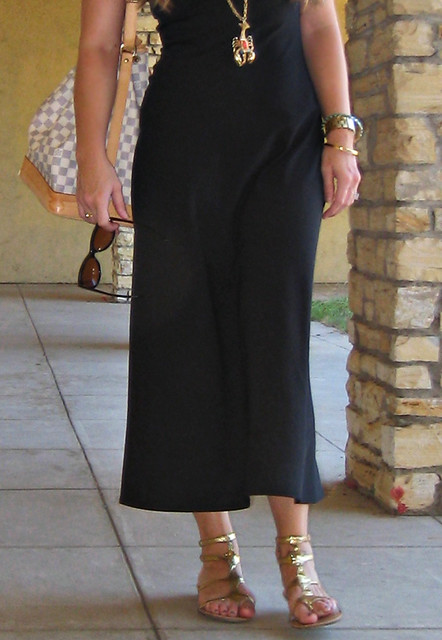

How to Accessorize Your Outfit: Men's Fashion Guide
By: Dan
Introduction
Introduction:
Nowadays, fashion is not just for women. Men's fashion has come a long way, and the modern man understands the importance of looking stylish and put-together. Accessories play a crucial role in completing a man's outfit, and with the right choice, it can elevate his fashion sense to the next level. In this article, we will give you the ultimate guide to accessorizing your outfit and turning heads.
Previous Subheading Titles:
1. The Basics of Men's Accessories
2. What Watches to Wear with Different Outfits?
How to Accessorize Your Outfit: Men's Fashion Guide
Accessories can transform an outfit from drab to fab effortlessly. With the right accessories, a simple outfit can make a bold statement without breaking a sweat. In this section, we'll take a look at the essential accessories every man should have in their collection.
The first accessory every man should have is a watch. Not only is it functional, but it is also stylish and can be worn with any outfit. Make sure to invest in a timeless piece that will last you a lifetime.
Next up is the belt. A belt is not just for keeping your pants up but also adds a touch of sophistication to your outfit. Choose one that matches your shoes, and you'll be ready to hit the town.
A leather wallet is also a must-have accessory for every man. Your wallet speaks volumes about you and reflects your personality. A sleek and stylish wallet will show that you are refined and mature.
Finally, a pair of sunglasses completes any outfit during the summer months. Not only do they protect your eyes from harmful UV rays, but they also add an air of mystery and coolness to your style.
In conclusion, accessories are an essential part of any man's outfit, and the right ones can make a world of difference. Choose wisely and invest in timeless pieces that will elevate your style for years to come.
ad space
Match Your Belt with Shoes
When it comes to dressing well, the devil is in the details. It's not just about putting on a well-fitted shirt and trousers, but also about accessorizing your outfit well. That's where belts and shoes come into play. A common mistake men make is pairing a brown belt with black shoes or vice versa. In this guide, we'll share some tips on how to match your belt with shoes to create cohesive and stylish looks that will elevate any outfit.
One of the most important rules of thumb is to match the color of your belt with your shoes. This may sound like a no-brainer, but it's surprising how often we see men violating this basic rule. If you're wearing black shoes, reach for a black belt, and if you're sporting brown shoes, go for a brown belt. If you're not sure whether the shades match, hold the shoes and belt side by side in natural light and look for any glaring mismatches.
Another way to match your belt with your shoes is to consider the texture and finish of both. For example, a matte black leather belt would pair well with suede shoes, while a glossy black leather belt would complement patent leather shoes. Similarly, a braided or woven belt would work well with textured shoes such as loafers or moccasins.
When it comes to formal wear, it's essential to pay attention to the buckle of your belt. A sleek, understated buckle in a silver or gold tone would work well with dress shoes, while a bold or ostentatious buckle would be better suited for casual outfits.
In summary, matching your belt with shoes is an easy way to create a polished and put-together look. By adhering to some simple rules, you can ensure that your accessories work in harmony with your outfit and make a great first impression.
ad space
Wear a Stylish Watch
Men's fashion is all about attention to detail. It's not just about what clothes you wear; it's also about how you accessorize them. One of the most essential accessories for men is a wristwatch. A watch is not only a practical timepiece; it also makes a statement about your personality and style. In this guide, we will explore why wearing a stylish watch is a must-have accessory for any outfit.
Firstly, let's talk about the practical reasons for wearing a watch. A watch allows you to keep track of time without having to pull out your phone constantly. It's also a sign of professionalism and punctuality. For those who prefer analog watches, it provides a sense of sophistication and elegance that stands out from the digital era.
But beyond its practical functionality, a watch can elevate any outfit. It adds a touch of class and sophistication, perfect for any formal or semi-formal occasion. A dress watch, for instance, has a subtle, timeless design that suits any professional attire. It can be paired with a suit or a blazer and dress pants to create an upscale look.
For a more casual look, a dive watch or sports watch is a great choice. These watches are robust, reliable and are designed to withstand outdoor activities. The added benefit of having one the great outdoors is that it offers you a conversation starter, which is a great icebreaker for those who are always looking for things to talk about.
Lastly, when it comes to a stylish watch, the brand and the style matter. A good watch portrays personality and taste with the same power as a signature scent or your favourite pair of shoes. Looking at legendary brands such as Omega, Rolex, Tag Heuer, and Cartier, those who have a passion for watches always strive to own at least one of these timepieces. It's no secret that owning a good watch is an investment; however, it's a piece of investment that pays off in the long run.
In summary, wearing a stylish watch can add a touch of elegance, sophistication and personality to your outfit, making it a necessary accessory for every man's wardrobe. Choose the watch that best suits your personality and style, and watch it elevate any outfit. So, next time you step out, make sure you wear a watch that stands out and distinguishes you from the crowd.
ad space
Add a Pocket Square
When it comes to adding that final finishing touch to a well-put-together outfit, many people think of accessories such as ties, belts, and watches. However, one often-overlooked accessory for men is the pocket square. Not only does it add a pop of color or pattern to your outfit, but it also shows attention to detail and a sense of style.
Choosing the right pocket square can be overwhelming with the wide array of colors, patterns, and fabrics available. To start, consider matching or complementing the colors in your outfit. If your shirt has a small blue check, choose a pocket square with a blue hue to tie it together. Second, consider the fabric. Silk pocket squares are luxurious and formal while cotton or linen pocket squares are more casual and laid-back.
Once you've selected the right pocket square, the next step is to fold it properly. The classic style is a presidential fold - a simple square fold that neatly tucks into your pocket. Alternatively, you can try a puff fold for a more relaxed and playful look.
One common mistake when accessorizing with a pocket square is overdoing it. Remember, less is often more, and it's best to keep the rest of your accessories understated.
A final tip for accessorizing with a pocket square is to have fun with it! Don't be afraid to experiment with bold colors or daring patterns. It's an easy way to inject a bit of personality into your outfit, and you might just start a trend among your friends.
By adding a pocket square to your outfit, you're sure to turn heads and make a lasting impression. So go ahead, try it out, and elevate your style to the next level.
ad space
Accessorize with a Tie Bar or Lapel Pin
The Perfect Accessories for Achieving a Sleek Look: Tie Bars and Lapel Pins
We all know that an outfit is never complete without the right accessories. If you're looking to elevate your style beyond just the basics, it's time to explore tie bars and lapel pins. These classic accessories can add that extra touch of sophistication to your look that can make you stand out in a crowd.
Tie bars, in particular, are an essential accessory for any man who wants to look polished and put together. They help keep your tie in place, preventing it from sliding and swaying around. Plus, they add a touch of elegance and professionalism to any outfit.
On the other hand, lapel pins are a bit more decorative but equally stylish. They are a great way to add some personality to your outfit and show off your individual style. Whether you prefer something subtle and understated or bold and eye-catching, there are plenty of lapel pins out there to suit your taste.
When choosing a tie bar or lapel pin, it's important to consider the overall look you're going for. For a more classic and traditional look, opt for a simple and understated accessory that doesn't draw too much attention. Alternatively, if you want to make a statement or add some flair to your outfit, choose something with a bit more personality.
Overall, a tie bar or lapel pin is an excellent investment for any man who wants to take his style to the next level. These accessories may seem small, but they can make a big difference in the overall look and feel of your outfit. So give them a try, and see how they can elevate your style game.
ad space
Conclusion
After exploring the different ways to accessorize your outfit, it is time to bring it all together and create a cohesive and fashionable look. The right accessories can elevate any outfit and make it stand out from the crowd. However, it is important not to overdo it, as too many accessories can detract from the overall look.
When it comes to accessorizing, keep it simple with a few well-chosen pieces that complement your outfit. Your choice of accessories should also suit your personal style, whether that be classic, trendy or edgy. A good rule of thumb is to choose accessories that complement your outfit's color scheme or add a pop of color to an otherwise neutral outfit.
One of the most important accessories for a man is his watch. A watch adds an element of sophistication to any outfit, and there are a variety of styles to choose from. For a more casual look, a leather strap or sports watch is a great choice, while a metal bracelet or dress watch is perfect for formal occasions.
Another key accessory for men is a belt. Belts not only serve a functional purpose, but they can also add an extra layer of style to your outfit. Choose a leather belt in a classic color like brown or black, or add a pop of color to your outfit with a brighter hue.
Lastly, don't be afraid to experiment with different accessory combinations to create a unique and fashionable look. Whether it be layering necklaces or bracelets, or mixing patterns and textures, have fun with your accessories and express your personal style.
In conclusion, accessorizing your outfit is an easy and effective way to elevate your style. By following these simple tips and guidelines, you'll be able to create a cohesive and fashionable look that is uniquely you. Remember to keep it simple and choose accessories that complement your outfit, and have fun with different combinations to create a look that expresses your personal style.
ad space